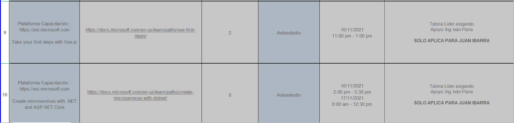

Name
Aqui va la imagen

1. First Steps with C#
2. Build .NET applications with C#
3. Add Logic to applications with C#
4. Work with data in C#
5. Get started Querying with Transact SQL
6. Take your first steps with Vue.js
7. Create microservices with .NET and ASP .NET Core
8. Cloud computing basics for developer